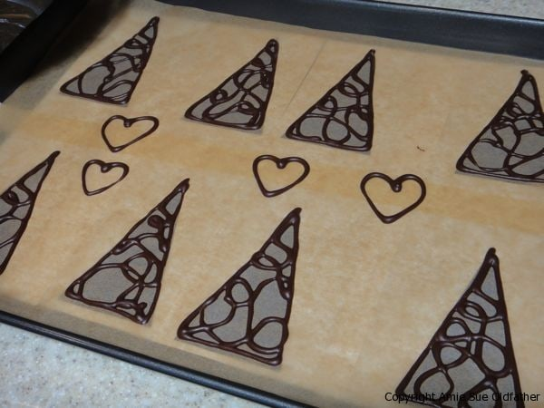
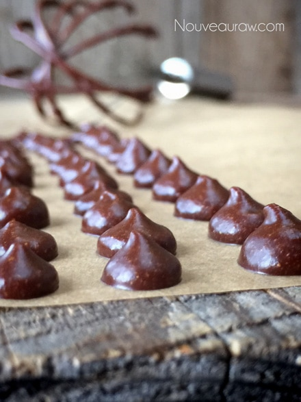
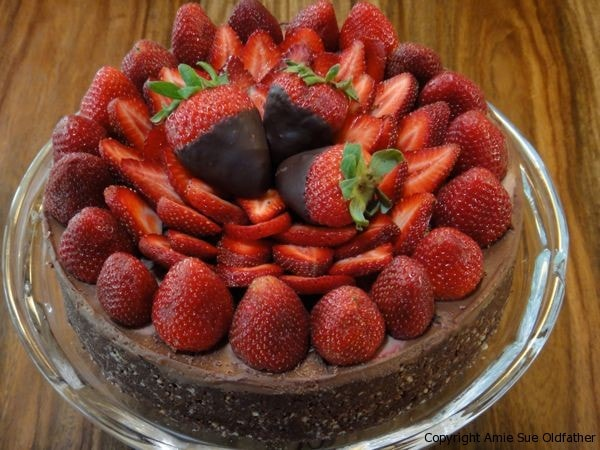
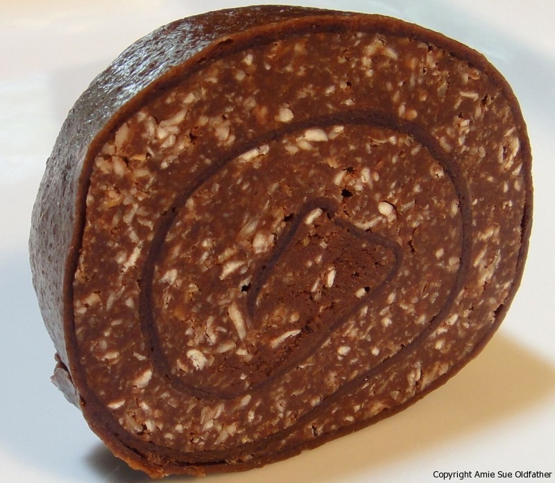
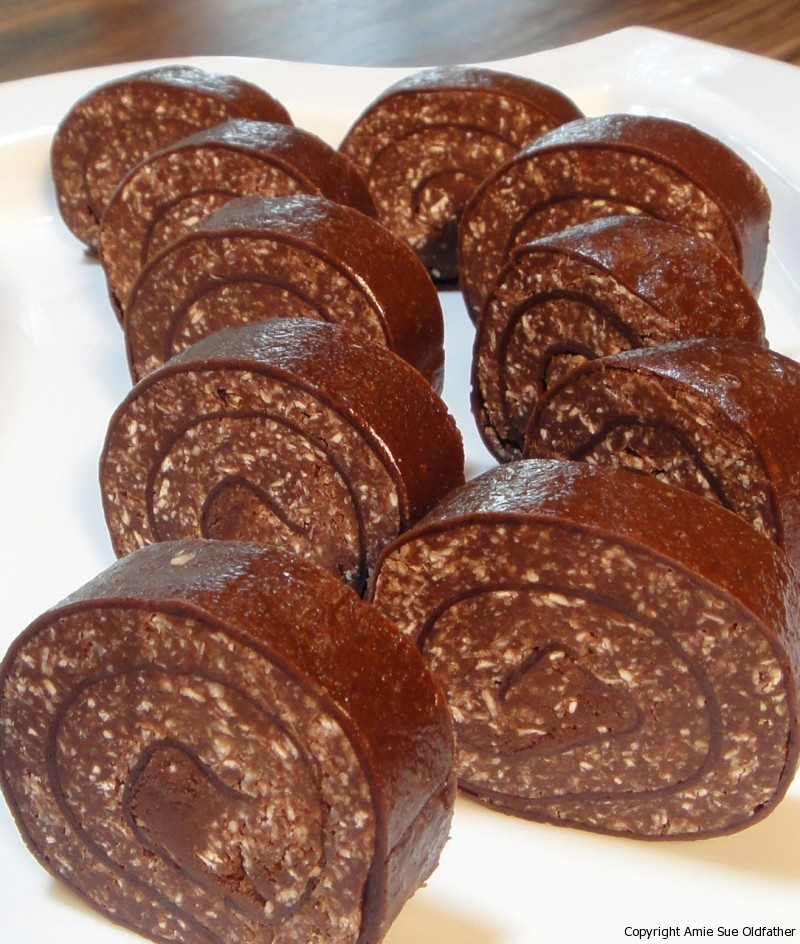

My head is spinning after today

MAy 5th, 2011 – Oof-da! What a day I had in the kitchen. I played with chocolate, I wore chocolate, I licked chocolate, I wiped it off the floor, the cell phone, the wall….you name it… all day long! I started the day started off knowing that I had a simple task at hand. I just needed to complete my Raw Chocolate Mocha Cheesecake that I was making for a friend’s dinner party tonight. I made the cheesecake last night and today I just had to decorate it. It sounds so simple…that simple project took 5 hours! Oof-da mira!
I went through 4 batches of chocolate TRYING to get it right. All’s I had to do was make the chocolate art forms, allow them to harden and then decorate the cake.
Batch #1 – looked gorgeous but it didn’t harden. That chocolate went into a bowl and out of vision. I would deal with that later. Batch #2 – Oooooh fiddlesticks, I didn’t have enough for batch #2. After several stores later I found some Raw Cacao Butter. Ok back to Batch #2 – Instantly it gelled up and then separated. *throws hands up in the air* “What in tarnation, I say, What in Tarnation!” That went into the bowl, I would deal with that later as well. Batch #3 – new recipe, looked beautiful, I was feeling good about this batch. I made my forms on the pan and popped them in the freezer.
After my 3rd batch of dishwashing, I pulled my chocolate art out of the freezer. Looking good, it’s firm…I think we have a winner here! I started placing them. I needed 12 of them, 1 broke but that’s ok…I made a few extra. Another broke, still ok, another broke *beads of chocolate are starting to form on my forehead* ANOTHER broke, now I am in trouble. I have to make another batch now. I am not sure what was more disheartening, the fact that I had to use MORE ingredients or the fact that I that I was going to have to do dishes AGAIN.
Batch #4 – Same recipe, different technique… You don’t mind if I take a quick side note, do you? Great, thanks. A few years ago my husband and I took a chocolatier course. It was hard work and I learned to have a great deal of respect for those in that industry. It is a true art form. What I am coming to learn now is that the same goes for raw chocolate. It’s a true art form and takes time and patience to learn it. The bad part was that I was running short on time and running short on patience.

As I was buzzing around the kitchen, watching the time slip by, I knew I had to really pick up my pace. That is when I accidentally hit the edge of the measuring cup holding the Agave syrup.
Oh, you know what is coming now don’t you?! It was in slow motion as I watched the golden amber colored, silky, shiny, threads of sticky gooeyness, sail through the air. I saw every bounce that the sturdy plastic measuring cup made on the floor.
One bounce – it sprayed the oven, second bounce – it splattered the fridge. Bounce #3-5 peppered the floor with such force that it decorated the cabinets, my left shoe and left a Cindy Crawford amber colored mole on my left cheek. Yep, that is JUST what I needed to deal with. lol
So Batch #4 – (after the kitchen hose down) started out beautifully, it was blending, forming, holding shape…it quickly went into the freezer. I still had some chocolate left in my piping bag so I tilted my head back and squeezed every last drop into my mouth…NOT, was tempting but I held onto my willpower! It was starting to thicken, time was my enemy…”What to do, what to do with it?” Chocolate Chips! Look at my army of yumminess!
I did dishes AGAIN and then took my chocolate art forms out of the freezer. They looked perfect! I was so relieved. I brought the cheesecake back out to complete the job. I had made six forms. The first one went on perfect. The second one broke…gulp. The last two went on just right. Shew, I let out a huge sigh of relief. I needed a drink! I walked across the floor (each step made that “sticky theater floor” sound) I didn’t care, I was done! I sipped my tea and ate my little bowl of chlorella nuts for a snack. (you’ll see why I shared that with you soon enough) I wiped my brow and smiled….so glad that was o….v….e…..rrrrr.
My thoughts fell off the radar as I looked at the cheesecake, ooh no…what was happening?? The first chocolate forms that I had made are falling over as they warmed to room temperature. Say it isn’t so!! I didn’t have any extra forms… My heart was crushed. The more I tried to save them, the more they gave up the ghost. I looked at the clock, I didn’t have enough time to make Batch #5. What was I to do? I was forced to shift gears. I gently removed all the chocolate and put it in a bowl. lol My collection of chocolate globs was growing but I set it aside, I didn’t have time to deal with it just yet.

I loaded the top of the cake with strawberries. I had dipped 3 strawberries in chocolate, back when I “thought” I had some extra chocolate to have as a snack a bit later. No snack for you! They saved my biscuits and became the center stage of the decor.
Raw Chocolate Mocha Cheesecake
It’s a far cry from what it was supposed to look like, but sometimes things just HAPPEN!
By the time I was done, my feet were sore, my hands were dried out and pruned up from washing so many darn dishes all day and my brain was numb. I walked past the mirror, stopped to brush the hair out of my eyes and guess what was looking back at me? A face with that Cindy Crawford golden agave mole on my cheek, a smear of chocolate on my forehead, 3 chocolate dots that splattered me at some point, a dab of chocolate on my chin and a ring of green all my lips from chewing up those chlorella nuts. lol I was a site for sore eyes. I almost took a self-portrait picture for you of it but I didn’t have the energy.
I apologize for having such a winded post here, it appears I had a lot to say about my adventure today and needed to vent it out. Before I hit the send button, some of you may be asking what I did I do with all that chocolate that went south on me. Well, this is what I did. Back in March, I had made some Chocolate Banana Wraps. I had them sealed up really well and they are still wonderful tasting to this very day. So I look the wrap and laid it out.
I then took all the chocolate and placed it in the food processor. I added raw oats, 1 tsp salt and about 1 cup of raw almond butter. Oh yum! I then took the batter and spread it out on the chocolate wrap. Then proceeded to roll it up. I wrapped it in plastic and chilled it in the fridge. When chilled and firm, I sliced them into pinwheels. You can decorate these however you wish. They are soooo yummy!


So once again, no ingredients went into the compost pile! I love raw foods! You can have your “cake and eat too!” when you incorporate healthy desserts into your raw food diet.
So, that was my day…. have you ever had a day like this?
© AmieSue.com